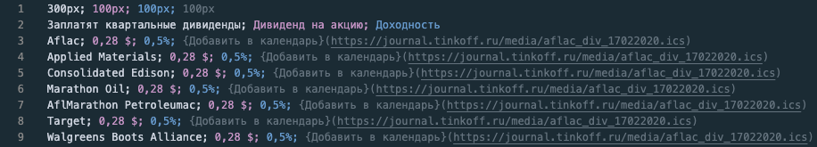
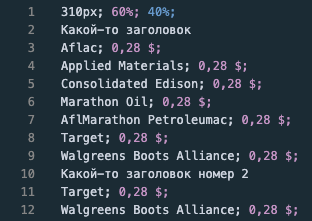

- CSV – это текстовый формат отображения табличных данных. Он очень простой в освоении;
- Откройте свой любимый текстовый редактор и создайте в нем файл в формате .csv;
- В формате .csv все данные по горизонтали разделяются между собой точкой с запятой (;), все данные по вертикали — переносом строки;
- Первая строка вашего файла будет содержать 1+N чисел, где первое число это ширина всей таблицы, а последующие ширины каждого столбца;
- Вторая строка будет представлять из себя заголовки таблицы
- Дальше идут табличные данные. Для примера:

У меня в VSCode стоит очень удобный плагин, который подсвечивает столбцы в .csv, вот ссылка
- На выходе мы получим такую таблицу:
See the Pen
YzXNGda by Valeriy Trusevich (@truetnoth)
on CodePen.
- Для мобильной версии всё аналогично:

- Вот такая табличка получится в итоге:
See the Pen
VwLPKqQ by Valeriy Trusevich (@truetnoth)
on CodePen.